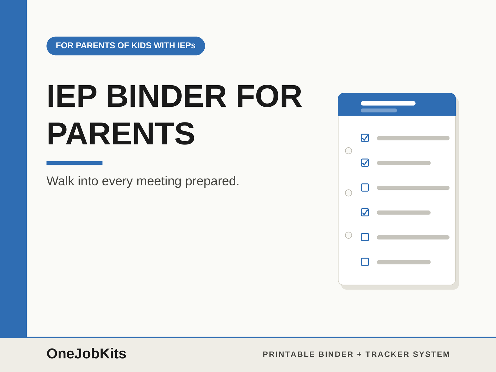

OneJobKits · Kit #6
IEP Parent Advocacy Binder — IEP binder printable

If you searched for an IEP binder printable, you may already own the failed version: a folder of papers that fails you at the exact moment it matters — in the meeting, when someone says "we're seeing progress" and you have no numbers in front of you.
This binder is built for that table. This page gives you its two most-used pages free, right here: the strengths one-pager and the meeting questions worksheet. Below them is the full kit they come from — a 60-page binder that organises every document, plus the part most binders skip: a tracker spreadsheet that follows whether the goals and the service minutes in the plan are actually happening, term by term. It is an organiser and preparation tool only — not legal or educational advice.
Free download — start with the IEP Meeting Prep One-Pager
The IEP Meeting Prep One-Pager is a 3-page fillable PDF: the child strengths one-pager — the page that starts every meeting on your child's strengths — plus the top meeting questions worksheet. It is usable at your very next meeting, with nothing else bought.
Download the free IEP Meeting Prep One-Pager (PDF)Get it on Gumroad instead
What the one-pager does not do: it prepares you for one meeting. The full binder below organises the whole year — documents, deadlines, goal progress and delivered minutes — so the tenth meeting is as evidenced as the first.
What's inside the full kit
- The binder (PDF, 60 pages, 7 sections) — printable and fillable
- My Child — the strengths one-pager with fillable fields, and the all-about-my-child page: the meeting starts with your child as a person
- The Paperwork — evaluations organiser, document timeline, IEP-at-a-glance, goals summary and accommodations page: every report dated and findable in seconds
- Meetings — 3 prep worksheets, word-for-word question scripts, and meeting-notes pages
- Communication Log — 6 table pages: every email, call and promise, with dates — the record that turns "you said" into "on 14 October, you said"
- Calendars & Deadlines — the annual review, the triennial re-evaluation tracker and the year's key dates, so no deadline arrives as a surprise
- Progress & Proof — term progress notes and service-minutes summary pages
- If Things Go Wrong — a concerns log and a general dispute map (information only), plus notes pages throughout
- Goal Tracker (spreadsheet, 5 tabs; Excel + Google Sheets) — START HERE · GOAL TRACKER: every goal with its baseline and target, term-by-term progress, and the latest score as a calculated percent of target · SERVICE MINUTES LOG: minutes promised vs minutes delivered, with the shortfall column and percent-delivered total · MEETINGS LOG · CONTACTS
- Bundle ($39) adds: the Section 504 Mini-Binder and the Advocacy Scripts Pack
A filled example — so you can see the finished thing
The tracker is easiest to understand filled in. This sample belongs to a fictional student — Maya, grade 3 — and every figure is invented; what is real is what the sheets calculate from entries like these:
| From the sample tracker | The fictional entries |
|---|---|
| Goal Tracker — reading fluency | Baseline 42 words per minute → target 75. Term progress: 48, then 55, then 61 — the sheet shows the latest as 81% of target, no calculator needed in the meeting |
| Service Minutes Log — speech | Promised 120 minutes a month; delivered 90. Shortfall: 30 minutes; percent delivered: 75% — one line, dated, ready to ask about calmly |
| Communication Log | "14 Oct — emailed case manager re: October minutes. Reply 16 Oct: two sessions missed for assemblies, makeup offered." Promises stop being memories |
That is the shape of the whole system: you write down what was promised and what happened, once, and the binder keeps the comparison — so "we're seeing progress" can be met with "here is the progress, and here are the minutes", kindly and with dates.
Who it is for
Parents in the first years of an IEP, and any parent walking into an annual review, a triennial re-evaluation or a difficult meeting who wants evidence instead of hope — organised before the meeting, not reconstructed after it.
Who it is not for
Anyone who needs legal representation or an advocate's judgment in a live dispute. This binder prepares you and keeps your records; where your situation needs a professional advocate or attorney, it is the evidence file you hand them — not their substitute.
Questions buyers ask
- What is a service-minutes log — and why track promised vs delivered?
- Your child's plan promises specific services for specific minutes — speech, OT, resource support. The tracker's Service Minutes Log records what was promised beside what was actually delivered, with the shortfall and the percent delivered calculated for you. It is the page parents end up fighting with, done for them: when the two columns disagree, you can see it, date it, and show it.
- How do I prepare for an IEP meeting?
- Start with the two pages in the free starter: your child's strengths one-pager, so the meeting opens with your child as a person, and the top meeting questions worksheet. The full binder adds three meeting prep worksheets and word-for-word question scripts — what to ask, in plain sentences, for when you are nervous or outnumbered — plus meeting-notes pages and the communication log behind them.
- Is this legal or educational advice?
- No. It is an organiser and preparation tool. It does not interpret your rights or tell you what to demand; the If Things Go Wrong section is a general information map, not advice. Where you need one, it is no substitute for an advocate or an attorney — it helps you show up ready, with your evidence in order.
- My child has a 504 plan, not an IEP — does this fit?
- The binder itself is built around the IEP process. The Bundle ($39) adds the Section 504 Mini-Binder, built for 504 plans, alongside the Advocacy Scripts Pack — so a family whose child moves between the two, or has one of each across siblings, keeps one system.
- Print it, or fill it in on screen?
- Both. The binder is a printable, fillable PDF — print the sections you carry to meetings, type into the rest. The Goal Tracker is a spreadsheet in Excel and Google Sheets formats, because the progress percentages and minutes shortfalls should calculate themselves.
- How do the deadline calendars work?
- The Calendars & Deadlines section tracks the dates that surprise parents: the annual review, the triennial re-evaluation, and the key dates in between, on one page — so a deadline is something you prepare for months ahead, not something mentioned in passing at the end of a meeting.
- What does the free one-pager cover, and what does the full binder add?
- The free Meeting Prep One-Pager is 3 pages: the strengths one-pager plus the top meeting questions worksheet — usable at your very next meeting. The full binder adds the whole year around them: every document organised and dated, the goals and minutes tracked term by term, the communication log, the deadline calendars, and the dispute-notes section if things go wrong.
Prices
Standard: $29 · Bundle: $39 — one-time payment, digital download. No subscription; the files are yours.
Can't find the kit you need?
We build it. Ask us — first asker gets it at half the shelf price. Tell us the job at onejobkits.com and we will build the kit for it.
Related kits
Please know: this is an organiser and preparation tool only — not legal or educational advice, and no substitute for an advocate or attorney where you need one. All example data is fictional (Maya, her goals and minutes are invented, and the sample says so).